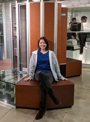
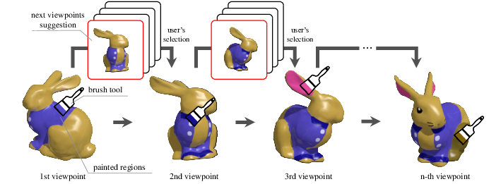
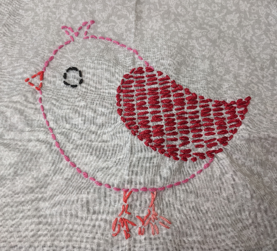
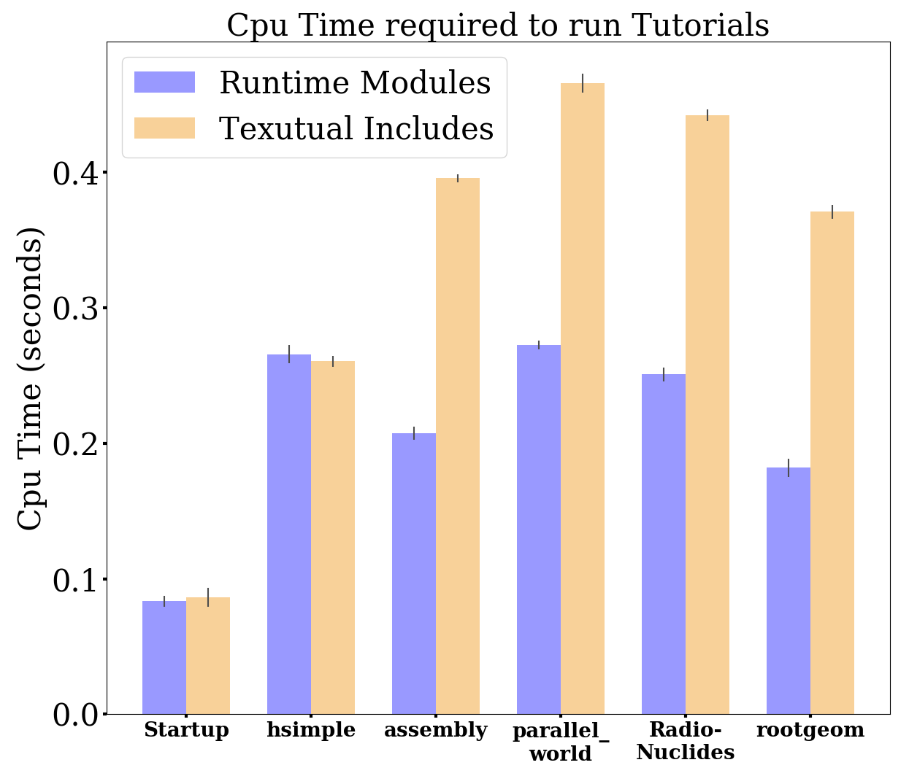

Yuka Ikarashi (五十嵐祐花)
Yuka Ikarashi (née Takahashi) is a PhD student at MIT CSAIL, advised by Jonathan Ragan-Kelley.
I received a Bachelor of Science in Information Science in 2020 from the University of Tokyo, where I worked with Takeo Igarashi and Tsukasa Fukusato.
[CV] (Last update: June 2021)
E-mail (MIT): ikarashi at mit.edu
Twitter: at 00_
|

at Deutsches Museum with Cray-1 (2017)
|
I'm interested in creating compiler systems and programming languages for real-world applications.
Papers

PaintersView: Automatic Suggestion of Optimal Viewpoints for 3D Texture Painting
Yuka Takahashi, Tsukasa Fukusato, Takeo Igarashi
SIGGRAPH ASIA 2019 technical brief
[project page] [doi] [full html]
Migrating large codebases to C++ Modules
Yuka Takahashi, Oksana Shadura, Vassil Vassilev
19th International Workshop on Advanced Computing and Analysis Techniques in Physics Research (ACAT 2019)
[doi]
Optimizing Frameworks Performance Using C++ Modules Aware ROOT
Yuka Takahashi, Vasil Vasilev, Oksana Shadura, Raphael Isemann
23rd International Conference on Computing in High Energy and Nuclear Physics (CHEP 2018)
[doi]
Posters
3Dペインティングのための最適視点提示手法
Yuka Takahashi, Tsukasa Fukusato, Takeo Igarashi
Visual Computing 2019 Posters. June 27-29, 2019, Tokyo, Japan.
[poster]

Stitch: An Interactive Design System for Hand-Sewn Embroidery
Yuka Takahashi, Tsukasa Fukusato
SIGGRAPH 2018 Posters. August 12-16, 2018, Vancouver, BC, Canada.
ACM Student Research Competition Third Place Award.
[doi] [video]

Optimizing Frameworks' Performance Using C++ Modules-Aware ROOT
Yuka Takahashi, Vasil Georgiev Vasilev, Raphael Isemann
CHEP 2018 Posters. July 09-13, 2018, Sofia, Bulgaria.
[poster]
Investigating Universal Metrics of Vulnerability Regarding Cross-Site Scripting Attacks
Shogo Hayashi, Yu Asabe, Keiichi Ishikawa, Yuka Takahashi, Masashi Ikarashi, Kanta Matsuura
IWSEC 2016 Posters.
Education
- Massachusetts Institute of Technology
September 2020 -
Ph.D. in Computer Science
Advisor: Jonathan Ragan-Kelley
- The University of Tokyo
April 2015 – March 2020
Awarded a Dean's Award for excellent academic performance and bachelor thesis.
Ranked top at the Department of Information Science.
Bachelor of Science in Information Science. Major GPA: 3.98/4.0
Advisor: Takeo Igarashi
Talks
- Migrating large codebases to C++ Modules
Yuka Takahashi, Oksana Shadura, Vasil Georgiev Vasilev
ACAT 2019, March 2019, Saas-Fee.
[slides]
- Future of ROOT runtime C++ modules
Yuka Takahashi, Vasil Georgiev Vasilev
ROOT User's Workshop 2018, September 2018, Sarajevo.
[slides]
- ROOT prompt usability features and their costs
Yuka Takahashi, Vasil Georgiev Vasilev, Axel Naumann
ROOT User's Workshop 2018, September 2018, Sarajevo.
[slides]
- A better shell command-line autocompletion for clang
Yuka Takahashi
LLVM developer's meeting, October 2017, San Jose, CA.
[video]
Experience
- April 2020 - May 2020, Project Academic Support Specialist (research staff), The University of Tokyo, Japan.
Advisor: Tsukasa Fukusato
- August 2019 - September 2019, Visiting Student, UC Berkeley, US.
Advisor: Jonathan Ragan-Kelley
- March 2018 - February 2019, Research and Development Engineer, CERN, Switzerland.
Advisor: Vassil Vassilev
- May - August 2017, Google Summer of Code student, LLVM Organization.
Advisor: Raphael Isemann and Vassil Vassilev
Teaching and Mentoring
- April 2019 - August 2019, Google Summer of Code Mentor, HSF software foundation.
Student: Arpitha Raghunandan
- September 2019, Security Mini-camp, Lecturer.
Honored to give a compiler lecture to young students in the government-funded security lecturing project.
Projects
- ROOT
I started working on ROOT at CERN in March 2018, while being affiliated with Cincinnati University and Princeton University. I was mainly working on Cling, C++ Modules, and also their migration to CMSSW.
- LLVM/Clang
I started working on bash-autocompletion for Clang project as a Google Summer of Code student in 2017 and worked on C++ modules during my internship at CERN.
Grants and Awards
- Masason Foundation Fellowship (2020-)
- The Great Educators Fellowship from MIT EECS. This fellowship was offered to only the strongest candidates. Granted 9 months of tuition and stipend.
- Dean's Award from the University of Tokyo, for excellent academic performance and bachelor thesis. I was ranked top at the Department of Information Science.
- Doctoral research fellowship from Funai Foundation since 2020. Granted two years of tuition and stipend.
- Research internship grant from SVAP 2019.
- Travel grant from Computer Science Alliance at The Univesity of Tokyo. The grant was used to present the work on C++ Modules at ACAT 2019.
- Travel grant from LLVM Organization. The grant was used to present the work on autocompletion at LLVM developers' meeting 2017.
Miscellany
- Commiter of LLVM/Clang
- Commiter of ROOT
- EIKEN 1st Grade
- TOEFL 105/120pts
- Graduated Security Camp 2016
Volunteer Experience
- CODEBLUE 2016 and 2017 student volunteer. 2019 volunteer.
- SIGGRAPH 2018 student volunteer.
Travel
- I love traveling. I've traveled to 33 countries so far. Japan (born and lived for 21 years), UK (lived for one year), France, Belgium, Netherlands, Germany, Switzerland (lived for one year), Austria, Tunisia, Korea, China, Taiwan, Vietnam, US (living since 2020), Peru, Bolivia, Brazil, Argentina, Fiji, Luxembourg, Russia, Ukraine, Hungary, Spain, Italy, Bulgaria, Canada, Slovakia, Bosnia and Herzegovina, Croatia, Belarus, Czechia, UAE, Australia.
Links
- blog(Japanese)/github/linkedin
I'm happy to see people are accessing my page from all over the world.
Last update: June 2021